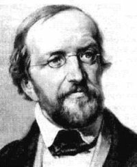
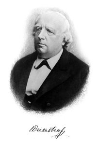
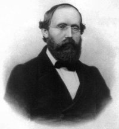

| Choisissez votre langue ! | Choose your language ! |
Nombres complexes
Index des pages
Nous avons que la construction de ℝ à partir de ℚ était motivée par l'impossibilité de résoudre des équations du type x²-2=0. Mais il reste des équations de degré deux sans solutions dans ℝ par exemple x²+2=0 et plus généralement x²=a avec a négatif, tout simplement à cause de la règle des signes. Remarquons que si l'équation x²=-1 avait une solution (appelons cette solution i pour 'imaginaire' car un tel nombre ne peut être réel), alors immédiatement toutes les équations du type x²=a avec a < 0 vont avoir des solutions dans tout contenant i et ℝ à savoir i√(-a) et - i√(-a). On peut même démontrer sans peine, dans ces conditions, que toute équation du second degré va avoir deux solutions.
De fait nous verrons que nous serons récompensés pour notre effort au delà de toute espérance pour ce qui concerne les équations algébriques.
Nous avons également été guidés par notre volonté de prolonger les structures algébriques existantes. Il serait donc bon comme dans le cas du prolongement de ℚ par ℝ que l'on aboutisse à un ensemble muni d'une structure de avec des opérations prolongeant celles de ℝ.De ce point de vue les choses se passeront plutôt bien aussi.
Enfin, une autre constante de notre démarche était le prolongement des inégalités. Alors là les choses iront beaucoup moins bien... La possibilité de prolonger les relations d'ordre va exister, certes, mais pas de manière unique. D'autre part nous ne trouverons pas de prolongement de ≤ compatible avec les opérations +, × . Il faudra donc nous résoudre à accepter qu'il n'existe sur le nouveau venu ℂ, le corps des nombres dits
'complexes'
aucun ordre naturel !
Encore au chapitre des bonnes nouvelles : Nous avons vu que les premières constructions ℤ, ℚ à partir de ℕ étaient relativement simples. On construisait des de . Par contre la construction de ℝ à partir de ℚ était beaucoup plus compliquée. A quoi faut-il donc s'attendre maintenant ?
Fort heureusement ℂ va se construire fort simplement à partir de ℝ. Un simple produit cartésien suffira.
Au travail!Galerie des portraits
L'école allemande est à l'honneur ; il y a malheureusement beaucoup d'absents.
Complex numbers
Index of pages
We remember that the construction of ℝ from ℚ was motivated by the impossibility of solving equations of the type x²-2=0. But there remain equations of degree two without solutions in ℝ by example x²+2=0 and more generally x²=a with negative a, all simply because of the rule of signs. Note that if the equation x²=-1 had a solution (call this i solution for 'imaginary' because such a number cannot be real), then immediately all the equations of the type x²=a with a < 0 will have solutions in every containing i and ℝ namely i√(-a) and - i√(-a). We can also demonstrate without difficulty, under these conditions, that all quadratic equation will have two solutions.
In fact we will see that we will be rewarded for our effort beyond all hope with regard to the algebraic equations .
We have also been guided by our desire to extend the existing algebraic structures. So it would be good just as in the case of extension of ℚ by ℝ that we end up with a set provided with a structure with operations extending those of ℝ.From this point of view the things will go pretty well too.
Finally, another constant in our approach was the extension of inequality. So in this special case things will go much worse ... The possibility of prolonging the relations of order will exist, of course, but not uniquely. On the other hand we will not find extension of ≤ compatible with the operations +, × .We will therefore have to accept that it does not exist on the newcomer ℂ, the field of numbers said
'complex'
no natural order!
More good news: We have seen that the first constructions ℤ, ℚ from ℕ were relatively simple. We were building of . On the other hand the construction of ℝ to from ℚ was much more complicated. So what to expect now ?
Fortunately ℂ will be built very simply from ℝ. A simple Cartesian product will suffice.
Let's go for it now !Gallery of portraits
The German school is honored; Unfortunately, there are many missing portraits.
|
Gauss (1777/1855-DE) |
Dirichlet (1805/1859-DE) |
Weierstrass (1815/1897-DE) |
Riemann (1826/1866-DE) |
Hankel (1839/1873-DE) |

|
 |  |  |
|
Création Gilles Dubois - licence CC-BY-SA
Created by Gilles Dubois - licence CC-BY-SA
|
Septembre 2023
September 2023
|
Version mobile Jquery
Mobile Jquery version
|